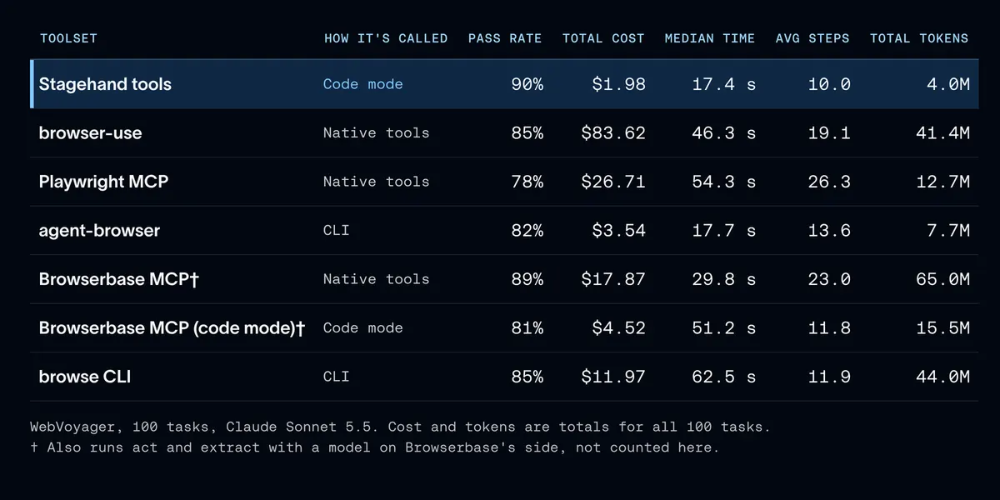
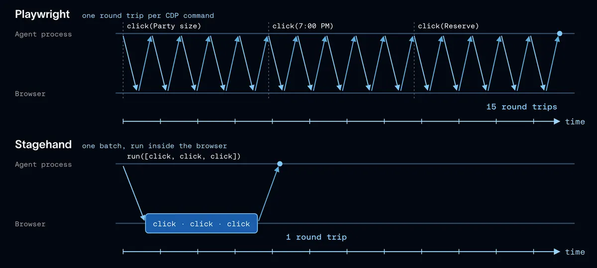

瀏覽器工具設計：少回合、少往返，成本約差 13 倍
導讀原文：LangChain Blog〈How We Optimized Browser Use for Deep Agents〉——工程實測文章，七套工具同題比較，逐項改工具並以 evals 驗證
七套瀏覽器工具跑同一批網頁題目，LangChain 選了 Browserbase 的 Stagehand，再照 trace 逐項改工具介面；結論是同一顆模型下，最大收益來自工具這一側：回傳多少內容、要走幾個回合。

選型：模型與題目固定，只換工具
需求也在長：原文引 DataDome 觀測，代理瀏覽請求在 9 月（原文未寫年份）成長 4.7 倍（比較基準原文未說明，屬開場背景、非本次實測）。
原文先把兩個難題點名：任務長，一題要幾十個模型回合；頁面雜，一次導航回傳的內容大多與任務無關。兩者都要求工具把 context 管好。
三個測試集都跑真實網站：WebVoyager 100 題用 Claude Sonnet 5.5、由 Jev 當評審；HardBench 102 題來自 Browserbase、用它自己的驗證器、多用 Claude Opus 5.5；微軟 WebTailBench 取了 150 題。
每個 harness 都要求回傳 JSON 答案：格式失誤——例如該給表格卻回一行字——不算瀏覽失敗。這個選項後來也 upstream 回 Browserbase 的 evals。
結果是通過率擠在 78% 至 90%，成本最多差約 40 倍、耗時差三倍多。Stagehand 在四項指標都最好；Playwright MCP 的通過率低 12 個百分點，成本約 13 倍、耗時三倍。
硬題守住同一趨勢：HardBench 38 題核心題，Stagehand 的 run 過 30 題，Browserbase 的 browse CLI 只過 21 題，原文稱其每題成本是前三倍。
（編輯觀點：七套裡四套出自 Browserbase 自家，選型結論對它有利；原文附完整結果連結，可自行複核。）
code mode：一段程式取代一串呼叫
run 直接吃程式碼。代理把開頁、填欄、點擊、驗結果寫成一段 snippet，中間不必每次停下來等模型決策；中途變數留在程式裡，只有最後回傳的東西進 context。
步數與回傳量一起降：一題平均 10 步（Playwright MCP 約 26 步）；一次導航回中位 117 字元，Browserbase 代管的 navigate 工具約 17,000 字元。
選型之前就先看到效果：Browserbase 的 MCP 工具改由程式碼在 interpreter 裡呼叫，成本從 $17.87 降到 $4.52。
它同時吃 Playwright 風格的程式碼。模型訓練看過大量 Playwright，寫得最順；換成只吃 Stagehand 原生 API 的版本，通過率少 5.3 個百分點、每過關成本多 19%，即使工具說明寫得準。
往返與等待：從介面擠出秒數
一次 Playwright 的 click 其實是五次 CDP 呼叫：把元素捲進視窗、讀位置，再 mouse move、press、release。每次等下一個回應才送下一個，一次點擊就是五次往返。
瀏覽器離代理越遠越貴，從筆電到沙箱到雲端都算在帳上。Stagehand v4 改成當擴充套件跑在瀏覽器內，低階呼叫在頁面旁發生，run 再把整批動作一次送出。

讀頁同樣是成本。snapshot 回傳修剪過的可及性樹，每個可互動元素帶 ID，代理直接送 {"op":"click","id":"0-7"}，不必讀原始 HTML 或自己寫 selector。
截圖則相反：在 WebTailBench 每次呼叫中位 89 KB，還得由模型自己解讀。但修剪要在源頭——事後把 snapshot 壓到 8,000 字元，代理只是重抓一次頁，每過關成本沒有下降。
最大一筆是等待。trace 裡代理愛寫 page.waitForTimeout(8000)，多數頁面早就好了。改成頁面安靜 500 毫秒即結束、且不超過代理指定的時間；一次測量中 8 秒的等待 0.6 秒就返回。
HardBench 上與結構化答案、模型呼叫逾時合計，中位任務時間由 182 秒降到 124 秒，準確率在雜訊內；這個修補也已 upstream 回 Stagehand。
| 數字 | 誰說的 | 限定語 |
|---|---|---|
| 90% / $1.98 | LangChain 自測 | WebVoyager 100 題、Claude Sonnet 5.5，成本為 100 題合計 |
| 速度約 2 倍 | Browserbase 自報 | v4 官方 benchmark 對比 Playwright，無第三方驗證 |
| token 效率高約 80% | Browserbase 自報 | v4 對比 Playwright，同樣無第三方驗證 |
| 89 KB／次 | LangChain 自測 | 截圖，WebTailBench 每次呼叫的中位數 |
| 182 → 124 秒 | LangChain 自測 | HardBench 中位數，含等待、結構化答案、模型呼叫逾時三項合計，準確率在雜訊內 |
（本站整理：原文未給這張歸屬表；前三列與末列皆為 LangChain 自家實驗、無第三方驗證，後兩列的「2 倍」與「80%」另為 Browserbase 自報，兩者不混算。）
原文的結論很聚焦：最大收益來自工具——送回模型的東西有多少、要花幾個回合。它也把方法論講白：先搞懂你的用例會產生多少 context，再用 trace 找哪裡浪費，最後用 eval 判斷改動有沒有幫上忙。
帶走三件事
工具介面比模型好換。同題同模型，換工具就把成本拉開約 13 倍。
修剪要在源頭。事後砍 context，代理只會重抓一次頁。
等待用訊號不用猜。頁面安靜就前進，別睡滿八秒。
同一主題的其他館藏
導讀為本站編輯內容（AI 摘解自原文與館藏重點，非官方文件）；引述數據出自原文，圖解與小標為編輯整理（兩張圖為原文圖，數字歸屬表為本站整理）。內容經對照原文的獨立事實審查後發布。